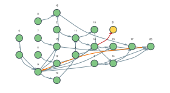

Newton's method and :error ports
Newton's method for f(x) = x² - c — that is, for √c:
\[x' = x - \frac{f(x)}{f'(x)} = x - \frac{x^2 - c}{2x}\]
It is the smallest algorithm that has a real failure mode: f'(x) = 2x becomes zero, and the step is undefined. This example routes that failure through an :error port, which the guide describes in general: the engine never writes to such a port, so the node that can fail catches its own failure and publishes it instead of the normal result.
One graph gives three different outcomes, chosen by settings alone:
| settings | outcome |
|---|---|
c = 2, x₀ = 1 | converges to √2 |
c = -1, x₀ = 1 | no real root: Newton walks into x = 0 and stalls on the second turn |
c = 0, x₀ = 1 | a double root: convergence is linear, and with a tight tol the diagnosis arrives first |
The exception the port carries
An :error port must be required = false and its datatype must be a subtype of Exception. A custom exception is the natural choice, because it is also the only thing the handler will receive:
using MetidaFlows
import MetidaFlows: PortSpec, getportspec, getstatus, isready, getnode
struct NewtonStall <: Exception
x::Float64
iter::Int
f::Float64
df::Float64
eps::Float64
end
Base.showerror(io::IO, e::NewtonStall) = print(io,
"NewtonStall: |f'(x)| = ", abs(e.df), " < ", e.eps,
" at x = ", e.x, " (iteration ", e.iter, ", f = ", e.f, ")")The nodes
struct NConstF <: AbstractNodeType end # a Float64 source
struct NConstI <: AbstractNodeType end # an Int source
struct NewtonState <: AbstractNodeType end # the loop state (x, iter)
struct NMul <: AbstractNodeType end # a * b
struct NSub <: AbstractNodeType end # a - b
struct NAbs <: AbstractNodeType end # |a|
struct NLess <: AbstractNodeType end # a < b
struct NAddI <: AbstractNodeType end # a + b, integers
struct NNotLessI <: AbstractNodeType end # a >= b, integers
struct NOr <: AbstractNodeType end # a || b
struct NStep <: AbstractNodeType end # f/f' OR an :error
struct NewtonGate <: AbstractNodeType end # the branch of a turn
struct NewtonRescue <: AbstractNodeType end # the error handlerNStep is the only node with an :error output. The context of the failure (x, iter) is an input to it, because the exception has to carry that context to the handler — the handler has no other inputs, and that is on purpose:
spec_nstep() = NodeSpec("N step",
[PortSpec("F", Float64, :f),
PortSpec("Df", Float64, :df),
PortSpec("Eps", Float64, :eps),
PortSpec("X", Float64, :x),
PortSpec("Iteration", Int, :iter)],
[PortSpec("Out", Float64, :out),
PortSpec("Error", NewtonStall, :err; kind = :error, required = false)])
# the handler has ONE input, and it is :error. isready does not hold it back,
# but nothing enqueues it on a normal turn either.
spec_newtonrescue() = NodeSpec("Newton rescue",
[PortSpec("Error", NewtonStall, :err; kind = :error, required = false)],
[PortSpec("Reason", Symbol, :reason; kind = :terminal),
PortSpec("X", Float64, :x; kind = :terminal),
PortSpec("Iterations", Int, :iterations; kind = :terminal),
PortSpec("Derivative", Float64, :derivative; kind = :terminal),
PortSpec("Restart", Float64, :restart; kind = :terminal)])spec_nconstf() = NodeSpec("N const float", PortSpec[],
[PortSpec("Out", Float64, :out)], [:value])
spec_nconsti() = NodeSpec("N const int", PortSpec[],
[PortSpec("Out", Int, :out)], [:value])
spec_newtonstate() = NodeSpec("Newton state",
[PortSpec("Initial x", Float64, :init_x),
PortSpec("Initial iter", Int, :init_iter),
PortSpec("X", Float64, :x; kind = :feedback, required = false),
PortSpec("Iteration", Int, :iter; kind = :feedback, required = false)],
[PortSpec("X", Float64, :x),
PortSpec("Iteration", Int, :iter)])
n_binary_float(name, out) = NodeSpec(name,
[PortSpec("A", Float64, :a), PortSpec("B", Float64, :b)],
[PortSpec("Out", out, :out)])
spec_nmul() = n_binary_float("N mul", Float64)
spec_nsub() = n_binary_float("N sub", Float64)
spec_nless() = n_binary_float("N less", Bool)
spec_nabs() = NodeSpec("N abs", [PortSpec("A", Float64, :a)],
[PortSpec("Out", Float64, :out)])
spec_naddi() = NodeSpec("N add int",
[PortSpec("A", Int, :a), PortSpec("B", Int, :b)],
[PortSpec("Out", Int, :out)])
spec_nnotlessi() = NodeSpec("N not less int",
[PortSpec("A", Int, :a), PortSpec("B", Int, :b)],
[PortSpec("Out", Bool, :out)])
spec_nor() = NodeSpec("N or",
[PortSpec("A", Bool, :a), PortSpec("B", Bool, :b)],
[PortSpec("Out", Bool, :out)])
spec_newtongate() = NodeSpec("Newton gate",
[PortSpec("Stop", Bool, :stop),
PortSpec("Converged", Bool, :converged),
PortSpec("X", Float64, :x),
PortSpec("X next", Float64, :x_next),
PortSpec("Iteration", Int, :iter),
PortSpec("Iter next", Int, :iter_next)],
[PortSpec("X", Float64, :x),
PortSpec("Iteration", Int, :iter),
PortSpec("Root", Float64, :root; kind = :terminal),
PortSpec("Iterations", Int, :iterations; kind = :terminal),
PortSpec("Reason", Symbol, :reason; kind = :terminal)])The node that can fail decides which port to publish. Nothing else in the graph needs to know:
NEWTON_TRACE = Float64[]
function MetidaFlows.execute_unsafe!(node::DataNode{NStep})
f = getinputdata(node, :f)
df = getinputdata(node, :df)
eps = getinputdata(node, :eps)
if abs(df) < eps
setdata!(node, :err, NewtonStall(getinputdata(node, :x),
getinputdata(node, :iter), f, df, eps))
return [:err]
end
setdata!(node, :out, f / df)
return [:out]
end
function MetidaFlows.execute_unsafe!(node::DataNode{NewtonRescue})
e = getinputdata(node, :err)
setdata!(node, :reason, :stalled)
setdata!(node, :x, e.x)
setdata!(node, :iterations, e.iter)
setdata!(node, :derivative, e.df)
# where to restart is the algorithm's business, not the engine's
setdata!(node, :restart, e.x + 1.0)
return [:reason, :x, :iterations, :derivative, :restart]
end
function MetidaFlows.execute_unsafe!(node::DataNode{NewtonGate})
x = getinputdata(node, :x)
iter = getinputdata(node, :iter)
push!(NEWTON_TRACE, x)
if getinputdata(node, :stop)
setdata!(node, :root, x)
setdata!(node, :iterations, iter)
setdata!(node, :reason,
getinputdata(node, :converged) ? :converged : :exhausted)
return [:root, :iterations, :reason]
end
setdata!(node, :x, getinputdata(node, :x_next))
setdata!(node, :iter, getinputdata(node, :iter_next))
return [:x, :iter]
end
function MetidaFlows.execute_unsafe!(node::DataNode{NewtonState})
back = getinputdata(node, :x)
if back === nothing
setdata!(node, :x, getinputdata(node, :init_x))
setdata!(node, :iter, getinputdata(node, :init_iter))
else
setdata!(node, :x, back)
setdata!(node, :iter, getinputdata(node, :iter))
end
return [:x, :iter]
end
MetidaFlows.execute_unsafe!(n::DataNode{NConstF}) =
(setdata!(n, :out, Float64(n.settings[:value])); [:out])
MetidaFlows.execute_unsafe!(n::DataNode{NConstI}) =
(setdata!(n, :out, Int(n.settings[:value])); [:out])
MetidaFlows.execute_unsafe!(n::DataNode{NMul}) =
(setdata!(n, :out, getinputdata(n, :a) * getinputdata(n, :b)); [:out])
MetidaFlows.execute_unsafe!(n::DataNode{NSub}) =
(setdata!(n, :out, getinputdata(n, :a) - getinputdata(n, :b)); [:out])
MetidaFlows.execute_unsafe!(n::DataNode{NAbs}) =
(setdata!(n, :out, abs(getinputdata(n, :a))); [:out])
MetidaFlows.execute_unsafe!(n::DataNode{NLess}) =
(setdata!(n, :out, getinputdata(n, :a) < getinputdata(n, :b)); [:out])
MetidaFlows.execute_unsafe!(n::DataNode{NAddI}) =
(setdata!(n, :out, getinputdata(n, :a) + getinputdata(n, :b)); [:out])
MetidaFlows.execute_unsafe!(n::DataNode{NNotLessI}) =
(setdata!(n, :out, getinputdata(n, :a) >= getinputdata(n, :b)); [:out])
MetidaFlows.execute_unsafe!(n::DataNode{NOr}) =
(setdata!(n, :out, getinputdata(n, :a) || getinputdata(n, :b)); [:out])The graph
ConstF(x0) ────▶ head.init_x ┌──▶ NMul (sq = x·x) ──┐
ConstI(0) ─────▶ head.init_iter │ ├─▶ NSub (f = sq − c)
│ ConstF(c) ─────────┘ │
NewtonState ─────┤ ├──▶ NAbs ─▶ NLess ─┐
(x, iter) │ ConstF(two) ───────┐ │ ConstF(tol) │
▲ ├──▶ NMul (df = 2·x) ──┘ │ ├─▶ NOr ─┐
│ │ │ ConstI(maxiter) │ │
│ ├──▶ NAddInt (iter + 1) │ NNotLessI ────┘ │
│ │ ConstI(1) ─────────────┘ │
│ │ │
│ └──▶ NStep (f/f', ConstF(eps)) ──▶ NSub (x − step)──┐ │
│ │ │ │
│ │ :error NewtonGate ◀─────┘
│ ▼ │
│ NewtonRescue ──▶ :reason, :x, :iterations, │
│ :derivative, :restart │
└───────────── :feedback (x, iter) ─────────────────────────────┘Twenty-one nodes, thirty-three connections, exactly one :error edge.
function build_newton(; x0 = 1.0, c = 2.0, tol = 1e-10, eps = 1e-8, maxiter = 100)
w = Workflow(0; type = :ABW)
w.name = "Newton-Raphson"
cx0 = add_node!(w, DataNode(NConstF, spec_nconstf()))
cc = add_node!(w, DataNode(NConstF, spec_nconstf()))
ctol = add_node!(w, DataNode(NConstF, spec_nconstf()))
ceps = add_node!(w, DataNode(NConstF, spec_nconstf()))
ctwo = add_node!(w, DataNode(NConstF, spec_nconstf()))
ci0 = add_node!(w, DataNode(NConstI, spec_nconsti()))
cone = add_node!(w, DataNode(NConstI, spec_nconsti()))
cmax = add_node!(w, DataNode(NConstI, spec_nconsti()))
head = add_node!(w, DataNode(NewtonState, spec_newtonstate()))
sq = add_node!(w, DataNode(NMul, spec_nmul()))
f = add_node!(w, DataNode(NSub, spec_nsub()))
df = add_node!(w, DataNode(NMul, spec_nmul()))
af = add_node!(w, DataNode(NAbs, spec_nabs()))
conv = add_node!(w, DataNode(NLess, spec_nless()))
nexti = add_node!(w, DataNode(NAddI, spec_naddi()))
exh = add_node!(w, DataNode(NNotLessI, spec_nnotlessi()))
stop = add_node!(w, DataNode(NOr, spec_nor()))
step = add_node!(w, DataNode(NStep, spec_nstep()))
nextx = add_node!(w, DataNode(NSub, spec_nsub()))
gate = add_node!(w, DataNode(NewtonGate, spec_newtongate()))
rescue = add_node!(w, DataNode(NewtonRescue, spec_newtonrescue()))
setsettings!(w, cx0, Dict(:value => x0))
setsettings!(w, cc, Dict(:value => c))
setsettings!(w, ctol, Dict(:value => tol))
setsettings!(w, ceps, Dict(:value => eps))
setsettings!(w, ctwo, Dict(:value => 2.0))
setsettings!(w, ci0, Dict(:value => 0))
setsettings!(w, cone, Dict(:value => 1))
setsettings!(w, cmax, Dict(:value => maxiter))
add_connection!(w, cx0, :out, head, :init_x)
add_connection!(w, ci0, :out, head, :init_iter)
add_connection!(w, head, :x, sq, :a) # f(x) = x·x − c
add_connection!(w, head, :x, sq, :b)
add_connection!(w, sq, :out, f, :a)
add_connection!(w, cc, :out, f, :b)
add_connection!(w, ctwo, :out, df, :a) # f'(x) = 2·x
add_connection!(w, head, :x, df, :b)
add_connection!(w, f, :out, af, :a) # |f| < tol
add_connection!(w, af, :out, conv, :a)
add_connection!(w, ctol, :out, conv, :b)
add_connection!(w, head, :iter, nexti, :a)
add_connection!(w, cone, :out, nexti, :b)
add_connection!(w, head, :iter, exh, :a)
add_connection!(w, cmax, :out, exh, :b)
add_connection!(w, conv, :out, stop, :a)
add_connection!(w, exh, :out, stop, :b)
add_connection!(w, f, :out, step, :f) # the step, which can fail
add_connection!(w, df, :out, step, :df)
add_connection!(w, ceps, :out, step, :eps)
add_connection!(w, head, :x, step, :x)
add_connection!(w, head, :iter, step, :iter)
add_connection!(w, head, :x, nextx, :a)
add_connection!(w, step, :out, nextx, :b)
add_connection!(w, stop, :out, gate, :stop)
add_connection!(w, conv, :out, gate, :converged)
add_connection!(w, head, :x, gate, :x)
add_connection!(w, nextx, :out, gate, :x_next)
add_connection!(w, head, :iter, gate, :iter)
add_connection!(w, nexti, :out, gate, :iter_next)
add_connection!(w, step, :err, rescue, :err) # the only :error edge
add_connection!(w, gate, :x, head, :x)
add_connection!(w, gate, :iter, head, :iter)
return (w = w, cx0 = cx0, head = head, step = step, nextx = nextx,
f = f, conv = conv, gate = gate, rescue = rescue)
end
function newton(; kw...)
empty!(NEWTON_TRACE)
g = build_newton(; kw...)
scheduler!(g.w; maxiter = 200_000)
stalled = getdata(g.w, g.rescue, :reason) !== nothing
(reason = stalled ? getdata(g.w, g.rescue, :reason) : getdata(g.w, g.gate, :reason),
x = stalled ? getdata(g.w, g.rescue, :x) : getdata(g.w, g.gate, :root),
iter = stalled ? getdata(g.w, g.rescue, :iterations)
: getdata(g.w, g.gate, :iterations),
restart = stalled ? getdata(g.w, g.rescue, :restart) : nothing,
g = g)
end
r = newton(x0 = 1.0, c = 2.0, tol = 1e-12)
(reason = r.reason, x = r.x, iter = r.iter, error = r.x - sqrt(2.0))(reason = :converged, x = 1.4142135623730951, iter = 5, error = 0.0)Note that the caller reads the outcome from one of two places. Which one fired is itself the answer, so a wrapper that normalises both into the same shape — as newton does above — is worth writing once.
A failure that is routed, not raised
With c = -1 there is no real root. Newton goes from 1 straight to 0, and on the next turn f'(0) = 0:
r = newton(x0 = 1.0, c = -1.0)
(reason = r.reason, stalled_at = r.x, iter = r.iter, restart = r.restart,
trace = copy(NEWTON_TRACE))(reason = :stalled, stalled_at = 0.0, iter = 1, restart = 1.0, trace = [1.0])Nothing failed in the engine's sense. No node has the status :failed and the log is empty — the failure travelled as data:
(failed_nodes = [id for (id, n) in r.g.w.nodes if getstatus(n) === :failed],
error_log = count(m -> m.level === :error, r.g.w.log))(failed_nodes = Int64[], error_log = 0)The normal branch of that turn simply did not run, and it still holds the values of the previous one:
(nextx = getstatus(getnode(r.g.w, r.g.nextx)), # never ran this turn
gate = getstatus(getnode(r.g.w, r.g.gate)),
f = getstatus(getnode(r.g.w, r.g.f)), # does not depend on the step
gate_root = getdata(r.g.w, r.g.gate, :root), # nothing: the gate never published
rescue_runs = getnode(r.g.w, r.g.rescue).state.exec_n,
step_runs = getnode(r.g.w, r.g.step).state.exec_n)(nextx = :dirty, gate = :dirty, f = :clean, gate_root = nothing, rescue_runs = 1, step_runs = 2)The trace above is also one point short of the mathematics: it is collected in the gate, and on the failing turn the gate does not run. The point where it stalled exists only in the exception, which is why the handler republishes it.
On a converging run the handler never executes at all, even though isready would have let it:
r2 = newton(x0 = 1.0, c = 2.0, tol = 1e-12)
(rescue_ready = isready(r2.g.w, r2.g.rescue),
rescue_runs = getnode(r2.g.w, r2.g.rescue).state.exec_n,
rescue_status = getstatus(getnode(r2.g.w, r2.g.rescue)))(rescue_ready = true, rescue_runs = 0, rescue_status = :dirty)Recovery is the caller's
The handler publishes a point worth restarting from; the decision is outside the graph:
bad = newton(x0 = 0.0, c = 4.0) # f'(0) = 0 on the very first turn
good = newton(x0 = bad.restart, c = 4.0)
(first = (bad.reason, bad.x, bad.restart),
then = (good.reason, good.x))(first = (:stalled, 0.0, 1.0), then = (:converged, 2.000000000000002))A double root: the diagnosis arrives first
With c = 0 the root is double. Newton halves x every turn instead of squaring the error, and f'(x) = 2x goes to zero along with it. With a loose tol convergence wins; with a tight one the stall does:
loose = newton(x0 = 1.0, c = 0.0, tol = 1e-10)
tight = newton(x0 = 1.0, c = 0.0, tol = 1e-30)
(loose = (loose.reason, loose.x),
tight = (tight.reason, tight.x, residual = tight.x^2))(loose = (:converged, 7.62939453125e-6), tight = (reason = :stalled, x = 3.725290298461914e-9, residual = 1.3877787807814457e-17))At the moment of the diagnosis the answer was already good — just not good enough for the tolerance that was asked for. That is the price of "stop with a diagnosis": the graph cannot weigh "close enough" against "cannot continue", because the gate that knows about the tolerance never ran. The caller can, which is exactly why the handler reports x and not only a reason.
Things to watch
epsis not optional. Set it to0and the guard never fires: the step divides by zero,InforNaNflows on, and the graph reports success.r3 = newton(x0 = 0.0, c = 4.0, eps = 0.0, maxiter = 3) (reason = r3.reason, x = r3.x, rescue = getdata(r3.g.w, r3.g.rescue, :reason))(reason = :exhausted, x = NaN, rescue = nothing)A raised exception is not routed anywhere. It gives the node
:failed, adds one record to the log and stops the dependent subtree — which here is the whole graph, since every node descends from the source that failed. See what a failure does to the rest of the run;scheduler!(w; strict = true)is the way to have it reported rather than only logged. That is the whole reasonNStepcatches its own failure.:erroredges are invisible to cycle detection, so one can close a loop even in aDAWgraph. Convenient, and easy to forget.
The graph
The graph, with the :error routing in red: that edge carries a value, not a failure, so the node it leaves still ends :clean. See Drawing a workflow for the helper this uses.
gp = build_newton()
scheduler!(gp.w; maxiter = 200_000)
plotworkflow(gp.w; label = :id)